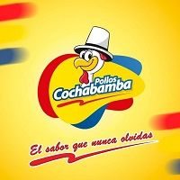
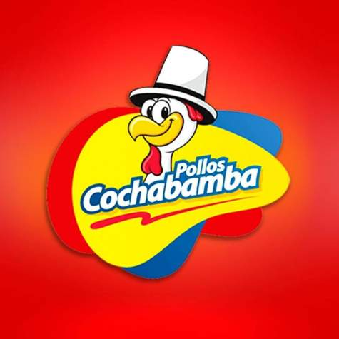
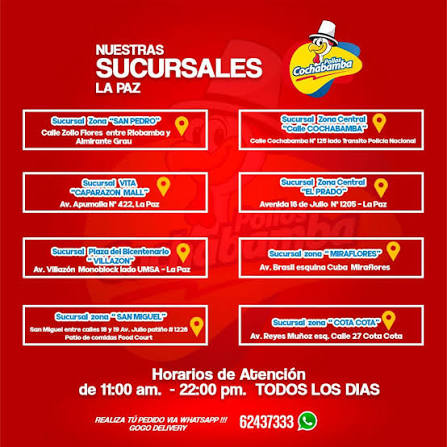

El Sabor Tradicional de la Ciudad
En Pollo Frito Cochabamba nos caracterizamos por brindar piezas de pollo crocantes por fuera y jugosas por dentro, acompañadas de papas fritas caseras y salsas especiales.
Fundado en , mantenemos la receta secreta del sabor que nunca olvidas.


